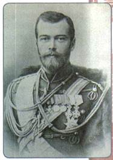
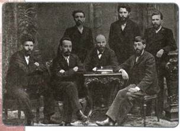
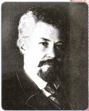

Каковы причины усиления деятельности оппозиционных сил в России в конце XIX — начале XX в.?
1. Николай II: новый император 20 октября 1894 г. умер император Александр III. На престол вступил его 26-летний сын Николай II (1868—1918).
Вступление Николая на престол вызвало волну ожиданий в обществе. Многие надеялись, что новый император доведёт до конца реформы, начатые его дедом, Александром II, и возьмётся за переустройство политической системы Российской империи.
В его адрес сразу же стали поступать петиции (коллективные прошения) от земств. В них высказывалась осторожная надежда на «возможность и право общественных учреждений выражать своё мнение по вопросам, их касающимся; дабы до высоты Престола могло достигать выражение потребности и мысли не только представителей администрации, но и народа русского». Но уже в первой публичной речи 17 января 1895 г. Николай заявил, что будет охранять основы самодержавия твёрдо и неуклонно, как его «незабвенный покойный родитель».

Николай II
Каких взглядов придерживались земские деятели, конституционалисты?
2. Борьба в верхних эшелонах власти
В ближайшем окружении императора существовали различные точки зрения на перспективы развития России. Министр финансов С. Ю. Витте первоочередными считал экономические реформы, среди них реформы в области промышленности и финансов. Индустриализацию страны он называл задачей не только экономической, но и политической. Создание современной промышленности позволило бы, по его мнению, достичь двух целей: во-первых, накопить средства для проведения назревших социальных реформ, заняться укреплением сельского хозяйства; во-вторых, постепенно вытеснить с российской политической сцены дворянство, заменив его представителями крупного капитала, провести преобразования политического строя.
Против планов С. Ю. Витте выступал директор департамента полиции и заместитель министра внутренних дел В. К. Плеве, имевший репутацию твёрдого «защитника русских устоев». Витте полагал, что Россия, следуя «мировому непреложному закону», вслед за другими странами перейдёт к капитализму. Плеве, напротив, утверждал, что у России «своя отдельная история и специальный строй». Некоторые реформы необходимы, но нельзя допустить, чтобы они совершались слишком стремительно под давлением «незрелой молодёжи, студентов... и заведомых революционеров». Министр полагал, что инициатива должна принадлежать правительству.
3. Оживление общественного движения
Позиция нового императора вызвала разочарование в обществе. Первыми подали голос студенты, потребовавшие восстановить университетскую автономию. В 1899 г. начались массовые студенческие беспорядки. Они усилились после того, как царь велел исключить зачинщиков беспорядков из университетов и отдать их в солдаты. В феврале 1901 г. один из таких исключённых студентов П. В. Карпович смертельно ранил министра народного просвещения Н. П. Боголепова. Это был первый после сравнительно долгого перерыва террористический акт, осуществлённый противниками власти.
Весной 1902 г. вспыхнули крестьянские волнения в южных губерниях России, где крестьяне особенно страдали от малоземелья. Толпы, достигавшие нескольких тысяч человек, врывались в помещичьи имения, захватывая хлеб, скот, инвентарь. В некоторых районах крестьяне приступили к дележу помещичьих земель. В погромах принимали участие все слои крестьянства, в том числе и зажиточные. К подавлению крестьянских выступлений была привлечена армия, устраивались публичные порки зачинщиков.
В начале 1900-х гг. рабочие выдвигали главным образом экономические требования об улучшении условий труда. В 1903 г. на юге России произошли массовые рабочие выступления. В Закавказье и на Украине (в Баку, Тбилиси, Одессе, Киеве, Екатеринославе, Харькове, на Закавказской железной дороге и др.) рабочие вышли на забастовки. Они требовали введения 8-часового рабочего дня, увеличения зарплаты, проводили митинги.
Оживились национальные движения. Задачи модернизации страны требовали наличия единообразия в административном, правовом и социальном устройстве государства, введения общего языка и образовательных стандартов. Но зачастую это объективно важное требование претворялось в жизнь с использованием довольно жёстких методов давления.
В 1899 г. в Великом княжестве Финляндском были ограничены права сейма. В 1901 г. правительство расформировало национальные воинские части, обязало вести все дела в государственных учреждениях на русском языке. Сейм отказался одобрить эти законы, финские чиновники объявили бойкот их выполнению. В 1903 г. генерал-губернатор Финляндии получил чрезвычайные полномочия.
Неспокойно было и на Кавказе. В 1903 г. произошли волнения среди армянского населения. Их спровоцировал указ о передаче имущества армяно-григорианской церкви в ведение властей, который был воспринят как посягательство на национальные ценности и религиозные традиции. (В 1905 г. этот указ отменён.)
В отношении еврейского населения продолжали действовать правила черты оседлости. Еврейская молодёжь не имела права доступа к государственной службе, поэтому еврейская интеллигенция особенно активно поддерживала антиправительственные движения, вступала в революционные организации, часто и руководила ими.
В ответ на активизацию этих сил в стране усилились антиеврейские настроения. Первый крупный еврейский погром произошёл в апреле 1903 г. в Кишинёве (было убито около 50 человек, около 600 человек разных национальностей получили ранения, разгромлены многие жилые дома и магазины). Власть ответила судебными процессами и указом об открытии для поселения евреев ещё около 150 городов и местечек.
4. «Зубатовский социализм» 1902 —1903 гг.
Главную опасность многие представители власти видели в нараставшем рабочем движении. Начальник Московского охранного отделения С. В. Зубатов попытался поставить под контроль рабочее движение и вырвать его из-под влияния революционных организаций. Он стремился внушить рабочим мысль, что интересы правительства не совпадают с интересами буржуазии и что улучшить своё материальное положение рабочие могут только при помощи государства.
При поддержке генерал-губернатора Москвы великого князя Сергея Александровича в 1901—1902 гг. в ряде городов Зубатов организовал легальные рабочие организации. Все их действия находились под надзором полиции. Поэтому деятельность Зубатова часто называют политикой полицейского социализма.
19 февраля 1902 г., в годовщину дня отмены крепостного права, члены этих организаций провели грандиозную манифестацию перед памятником Александру II в Кремле. Однако правительство облегчить положение рабочих не спешило. Поэтому члены зубатовских организаций приняли активное участие в прокатившихся в 1902—1903 гг. по стране рабочих стачках. Это вызвало недовольство крупнейших фабрикантов, и Зубатова в 1903 г. отправили в отставку, политика полицейского социализма была свёрнута.
В. К. Плеве, который был с 1902 г. министром внутренних дел, также с недоверием относился к инициативе Зубатова. Он сделал ставку на разрушение революционных организаций изнутри. Для этого Плеве считал необходимым внедрение полицейских агентов в ряды революционеров. Он расширил сеть отделений по охране порядка и общественной безопасности (их называли охранками). Однако 5 июля 1904 г. Плеве был убит бомбой, брошенной в его карету Е. С. Созоновым, членом революционной организации эсеров.
5. Создание РСДРП
В марте 1898 г. в Минске на свой I съезд тайно собрались 9 представителей от социал-демократических организаций (в частности, от «Союза борьбы за освобождение рабочего класса»). Они объявили о создании Российской социал-демократической рабочей партии (РСДРП). Однако вскоре после завершения съезда все его участники, кроме одного, были арестованы.
II съезд РСДРП прошёл в июле — августе 1903 г. в Брюсселе и Лондоне. Были приняты устав и программа партии.
Первая часть программы (программа-минимум) предусматривала решение задач буржуазно-демократической революции: свержение самодержавия и установление демократической республики; всеобщее избирательное право и демократические свободы; широкое местное самоуправление; право наций на самоопределение и их равноправие; возвращение крестьянам отрезков, отмену выкупных и оброчных платежей, возвращение ранее выплаченных выкупных сумм; восьмичасовой рабочий день, отмену штрафов и сверхурочных работ.
Вторая часть (программа-максимум) ориентировала на победу пролетарской революции, установление диктатуры пролетариата, переход к социализму.
При обсуждении на II съезде программы и особенно устава наметились серьёзные разногласия между радикальным и реформаторским течениями в РСДРП. Первое возглавлял В. И. Ленин, второе — Л. Мартов (Ю. О. Цедербаум).
На выборах в руководящие органы партии сторонники В. И. Ленина получили большинство, и за ними закрепилось название большевики. Они выступали за создание «партии нового типа» — замкнутой, законспирированной организации со строгой дисциплиной, жёстким подчинением меньшинства большинству. Российскую буржуазию большевики считали контрреволюционной силой, возможность успешных реформ отвергали и выступали за революционное свержение самодержавия в ходе вооружённого восстания. Главную силу революции большевики видели в рабочем классе, крестьянство относили к его союзникам.
Л. Мартов и его сторонники получили наименование меньшевики. Они полагали, что доступ в партию должен быть открыт всем слоям населения и в ней могут уживаться различные точки зрения и взгляды. Либеральную буржуазию они считали главной силой будущей революции, а пролетариат — её союзником. В крестьянстве меньшевики видели реакционную силу.
РСДРП была по своему составу партией пролетарско-интеллигентской, многонациональной. В 1907 г. в ней насчитывалось не менее 150 тыс. членов.

В. И. Ленин и другие члены «Союза борьбы за освобождение рабочего класса»
6. Создание ПСР
В 1890-е гг. сложился ряд групп социалистов-революционеров (эсеров), которые считали себя продолжателями революционного народничества, сторонниками «Народной воли».
В 1902 г. на встрече лидеров таких групп была образована Партия социалистов-революционеров (ПСР). Центральный комитет ПСР возглавил В. М. Чернов, во главе партии стояли М. А. Натансон, Е. К. Брешко-Брешковская, Н. С. Русанов, Н. Д. Авксентьев и др. Среди членов партии были учителя, инженеры, агрономы, ветеринары, врачи. К 1907 г. численность ПСР приближалась к 50—60 тыс. членов.
Программу партии утвердили на I съезде ПСР в конце декабря 1905 — начале января 1906 г. Главную задачу эсеры видели в подготовке народа к революции. Они считали, что в ликвидации самодержавия заинтересованы все слои населения, живущие собственным трудом: крестьянство, пролетариат и интеллигенция. Эсеры объединяли эти слои одним понятием «рабочий класс». Русскую буржуазию эсеры считали реакционной силой. Они выступали за свержение самодержавия и установление режима, который определяли термином «народовластие». Правом на его провозглашение, по их мнению, обладало только всенародно избранное Учредительное собрание. Эсеровская программа, единственная на тот момент в России, предусматривала создание федеративного государства.
Центральное место в программе ПСР занимал аграрный вопрос. Эсеры выступали за ликвидацию помещичьего землевладения и передачу земли крестьянам.
Следуя идеям «Народной воли», эсеры считали необходимым использование тактики индивидуального террора. По их мнению, террор способен поднять массы к революции и устрашить власть. В конце 1901 г. была создана Боевая организация эсеров (просуществовала до 1911 г.). Её возглавил Е. Ф. Азеф, являвшийся тайным агентом полиции, затем Б. В. Савинков.

В. М. Чернов
7. Либеральные организации
Внутренняя политика Николая II не отвечала и настроениям либеральной части русского общества.
В 1902 г. за границей начал выходить журнал «Освобождение», в первом номере которого было помещено заявление «От русских конституционалистов», написанное историком П. Н. Милюковым. В нём содержались требования политических свобод и бессословного народного представительства «в постоянно действующем и ежегодно созываемом верховном учреждении с правом высшего контроля, законодательства и утверждения бюджета». Речь, таким образом, шла о созыве представительного законодательного органа парламентского типа.
Журнал «Освобождение» стал печатным органом партии «Союз освобождения». Эта нелегальная организация просуществовала два года. Она была создана в январе 1904 г. в Петербурге и прекратила деятельность в октябре
1905 г. после образования партии кадетов. В программу «Союза освобождения» входили требования образования конституционной монархии, проведения всеобщих выборов, защиты «интересов трудящихся масс». Членами партии были либеральные земские деятели. Возглавляли её земский деятель И. И. Петрункевич, экономист, общественный деятель Н. Ф. Анненский.
В октябре 1904 г. «Союз освобождения» развернул кампанию в честь празднования 40-летия судебной реформы. Кампания получила выразительное название «банкетная» — в речах и тостах звучали призывы завершить реформы Александра II и ввести парламентское правление.
8. Либеральные проекты П. Д. Святополк-Мирского
В условиях нараставшего недовольства внутренней и внешней политикой правительства царь назначил министром внутренних дел либерально настроенного князя П. Д. Святополк-Мирского. Он пробыл на этом посту недолго, всего полгода (август 1904 — 9 января 1905 г.).
Однако за этот небольшой период министр несколько ослабил охранительную политику правительства (объявил частичную амнистию, смягчение цензуры, разрешил земские съезды), а также подготовил проект реформ.
Святополк-Мирский предполагал включить в Государственный совет выборных представителей от земств и городских дум. Он говорил также о необходимости расширить круг избирателей в земства, распространить земства на всей территории империи и др.
По инициативе Святополк-Мирского 12 декабря 1904 г. был издан указ императора «О предначертаниях к усовершенствованию государственного порядка», обещавший расширение прав земств, устранение цензуры, дарование прав «инородцам и иноверцам». Одновременно император заявил: «Я никогда, ни в каком случае не соглашусь на представительный образ правления, ибо я его считаю вредным для вверенного мне Богом народа».
Таким образом, власть была готова пойти на реформы, но при этом полагала, что все изменения должны быть осуществлены при сохранении самодержавной власти в неизменном виде.
ПОДВЕДЁМ ИТОГИ
Внутренняя политика Николая II, являющаяся прямым продолжением политики предыдущего императора, не отвечала настроениям большей части общества, ожидавшего от царя реформ. Оппозиционные силы встали на путь организационного оформления политических партий.
Вопросы и задания для работы с текстом параграфа
1. Что такое «зубатовский социализм»? Каковы его основные идеи? 2. Какие задачи были призваны решить легальные рабочие организации? 3. Перечислите требования, включённые в программу РСДРП. Какими способами члены РСДРП предполагали достичь своих целей? 4. Когда была создана ПСР? Расскажите об особенностях программы и тактики эсеров. 5. Какими организациями было представлено либеральное движение в начале XX в.?
Изучаем документы
ИЗ ЗАПИСКИ С. В. ЗУБАТОВА
За массой нам надо ухаживать. Она нам крепко верит, но веру эту и стараются в ней поколебать как оппозиционные, так и революционные пропаганды... Девизом внутренней политики должно быть «поддержание равновесия среди классов», злобно друг на друга посматривающих.
Чем, по мнению С. В. Зубатова, опасна антиправительственная пропаганда? Что должно противопоставить ей правительство?
ИЗ ПРОГРАММЫ РСДРП 1903 г.
Развитие обмена установило такую тесную связь между всеми народами цивилизованного мира, что великое освободительное движение пролетариата должно было стать и давно уже стало международным. Считая себя одним из отрядов всемирной армии пролетариата, российская социал-демократия преследует ту же конечную цель, к которой стремятся социал-демократы всех других стран.
Эта конечная цель определяется характером современного буржуазного общества и ходом его развития.
Заменив частную собственность на средства производства и обращения общественною и введя планомерную организацию общественно-производительного процесса... социальная революция пролетариата уничтожит деление общества на классы и тем освободит всё угнетённое человечество, так как положит конец всем видам эксплуатации одной части общества другою. Необходимое условие этой социальной революции составляет диктатура пролетариата, т. е. завоевание пролетариатом такой политической власти, которая позволит ему подавить всякое сопротивление эксплуататоров.
1. Частью какой программы — программы-минимум или программы-максимум — являются эти требования? 2. Что такое диктатура пролетариата? Для чего она, по мнению авторов программы, нужна?
ИЗ ПРОГРАММЫ ПСР 1906 г.
В вопросах аграрной политики и поземельных отношений партия социалистов-революционеров ставит себе целью использовать в интересах социализма и борьбы против буржуазно-собственнических начал как общинные, так и вообще трудовые воззрения, традиции и формы жизни русского крестьянства, и в особенности взгляд на землю как на общее достояние всех трудящихся. В этих видах партия будет стоять за социализацию всех частновладельческих земель, т. е. за изъятие их из частной собственности отдельных лиц и переход в общественное владение и в распоряжение демократически организованных общин и территориальных союзов общин на началах уравнительного пользования.
1. Что такое социализация земли? 2. Сравните программные требования РСДРП и ПСР.
Думаем, сравниваем, размышляем
1. Чем различались позиции революционных и либеральных сил в Российской империи в начале XX в.? В чём их интересы могли совпадать? 2. Как были связаны рост революционных выступлений и рост национальных движений в начале XX в.? 3. Привлекая дополнительные материалы, подготовьте сообщение о создании одной из политических партий, упомянутых в параграфе, и её программе.
4. Используя Интернет, составьте биографию В. И. Ульянова (Ленина). 5. Кто такие большевики и меньшевики? Сравните их взгляды.